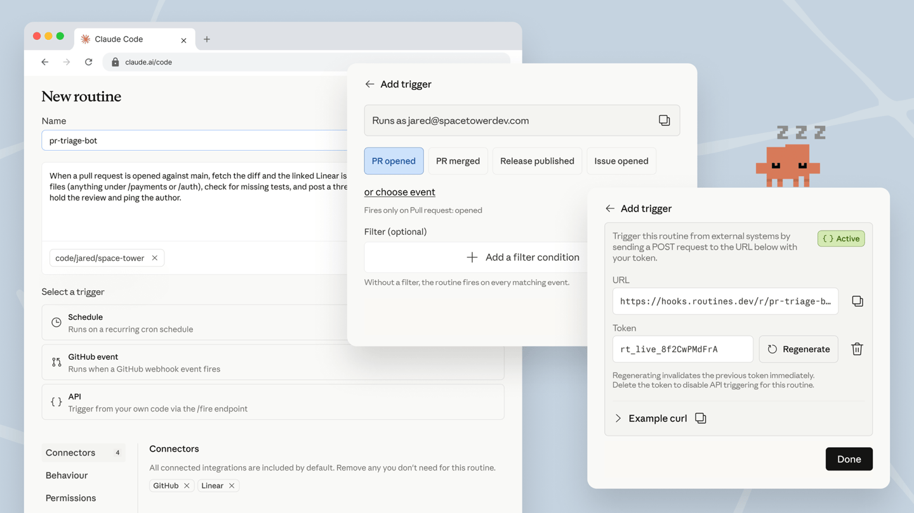
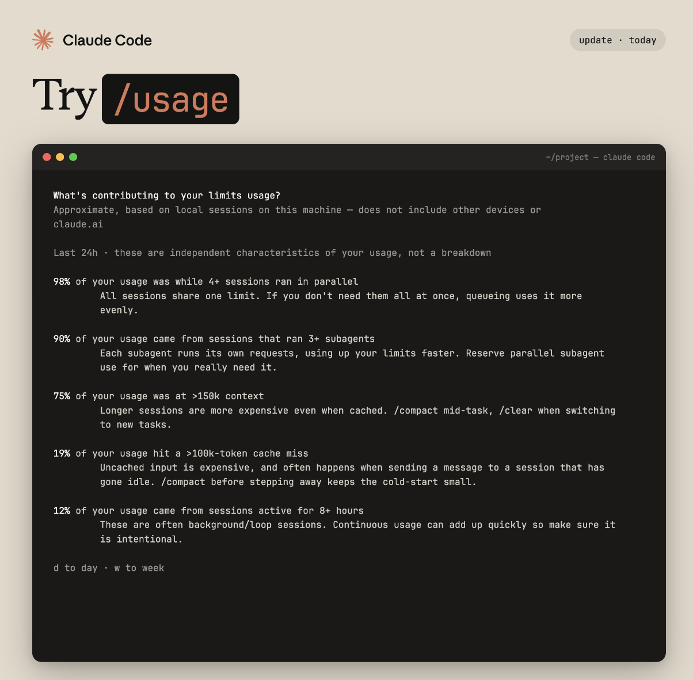

第 16 周 · 2026 年 4 月 13–17 日
Claude Opus 4.7 配备新的 xhigh 努力级别、Claude Code 网页版上的 Routines、移动推送通知在 Claude 需要您时 ping 您的手机、显示限制驱动因素的 /usage 分解，以及替代捆绑 JavaScript 的原生二进制文件。
发布版本 v2.1.105 → v2.1.113
5 项功能 · 4 月 13–17 日
Claude Opus 4.7
新模型
Anthropic 最强大的编码模型现在是 Max 和 Team Premium 的默认模型，也可以从 /model 在其他地方使用。它添加了一个新的 xhigh 努力级别，位于 high 和 max 之间：为大多数编码和代理任务提供最佳结果，在您第一次切换到 4.7 时应用为默认值。/effort 现在在您不带参数调用它时打开一个交互式箭头键滑块，因此您可以在不记住级别名称的情况下平衡智能与速度。
一次性切换模型和努力级别：
> /model opus
> /effort xhigh
Routines
web
模板化云代理，按计划、GitHub 事件或 API 调用触发。在 Claude Code 网页版上定义一次例程，包括提示、它可以接触的仓库和它需要的连接器，然后让 PR 打开、发布发布或您自己的 webhook 在您的机器不运行的情况下触发它。触发选择器现在涵盖 GitHub 事件和可选过滤器，并为每个例程提供一个令牌化的 /fire 端点供外部系统使用。

从网页 UI 创建一个，或从您的终端搭建：
> /schedule daily PR review at 9am
/usage breakdown
CLI
更好地了解您的 Claude Code 使用情况。/usage 现在显示驱动您的限制的因素：并行会话、子代理、缓存未命中和长上下文，每个都显示过去 24 小时的百分比和优化提示。按 d 或 w 在日视图和周视图之间切换。

随时运行它：
> /usage
移动推送通知
mobile
连接了 Remote Control，Claude 可以在长任务完成或需要决定继续时向您的手机发送推送通知。在 /config 中使用"Claude 决定时推送"打开它，或在您的提示中请求一个。当您启动长代理运行并想离开终端时很有用。
要求 Claude 在完成时 ping 您：
> notify me when the tests pass
原生二进制文件
v2.1.113
claude CLI 现在生成原生的每平台二进制文件，而不是捆绑的 JavaScript，因此已安装的 claude 命令不再调用 Node。npm 包通过可选依赖项（如 @anthropic-ai/claude-code-darwin-arm64）拉入正确的二进制文件，因此您的安装命令不会改变。独立安装程序已经提供了此二进制文件；npm 现在与其匹配。
升级并检查您正在运行的内容：
claude update
claude --version
其他亮点
新的 /ultrareview：使用并行多代理分析和对抗性批评通过在云中进行全面代码审查。不带参数运行它来审查您当前的分支，或 /ultrareview <PR#> 来审查特定 PR自动模式现在可供 Max 订阅者在 Opus 4.7 上使用，--enable-auto-mode 标志不再需要会话回顾显示您离开时发生的一行摘要；按需运行 /recap 或从 /config 关闭它新的 /tui 命令和 tui 设置在对话中间切换经典和无闪烁渲染；焦点视图从 Ctrl+O 移至其自己的 /focus 命令插件可以通过顶级 monitors 清单键提供后台监视器，在会话启动或技能调用时自动启用/theme 中的"自动（匹配终端）"选项遵循您的终端的深色/浅色模式/fewer-permission-prompts 扫描您的记录以查找常见的只读 Bash 和 MCP 调用，并为 .claude/settings.json 提议一个允许列表Claude 现在可以通过 Skill 工具发现并运行内置命令，如 /init、/review 和 /security-review``PreCompact hooks 可以通过以代码 2 退出或返回 {"decision":"block"} 来阻止压缩ENABLE_PROMPT_CACHING_1H 选择 API 密钥、Amazon Bedrock、Google Cloud 的 Agent Platform 和 Microsoft Foundry 用户进入 1 小时提示缓存 TTLsandbox.network.deniedDomains 设置从更广泛的 allowedDomains 通配符中分离特定域/undo 现在是 /rewind 的别名，/proactive 是 /loop 的别名强化的 Bash 权限：拒绝规则现在通过 env/sudo/watch 包装器匹配，Bash(find:*) 允许规则不再自动批准 -exec 或 -delete